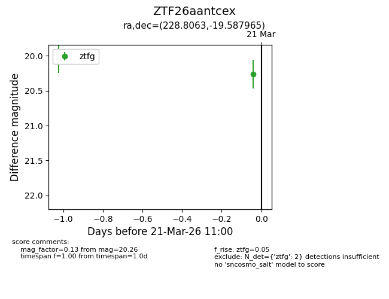
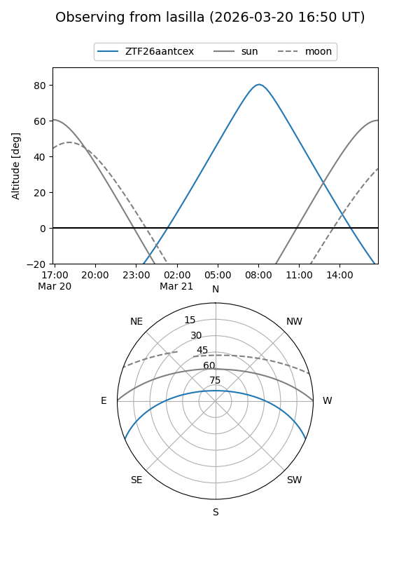
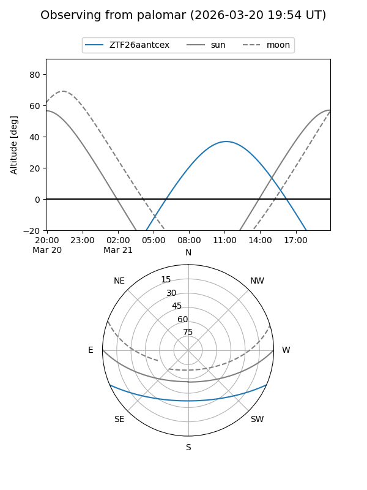

ZTF26aantcex
Target ZTF26aantcex at 2026-03-21 11:02
Aliases and brokers:
FINK: link
Lasair: link
ALeRCE: link
alt names
ZTF26aantcex (ztf,fink_ztf)
Coordinates:
equatorial (ra, dec) = 228.8063,-19.58796
equatorial (HMS+DMS) = 15:15:13.51,-19:35:16.67
galactic (l, b) = (343.4930,+31.73111)
Flags:
Photometry:
last ztfg=20.26
2 ztfg detections
Lightcurve

Visibility


Additional plots